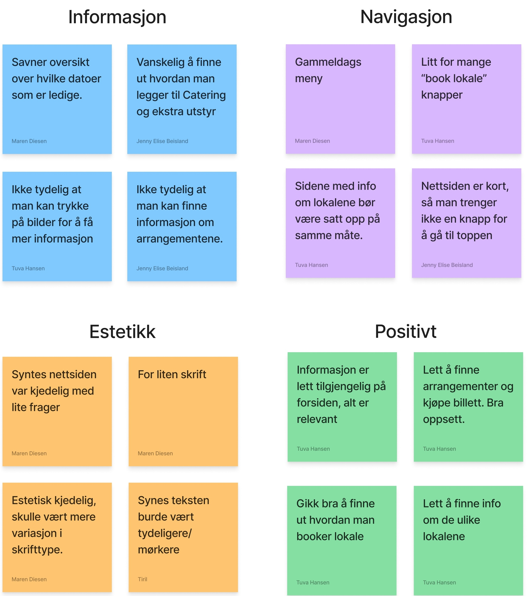
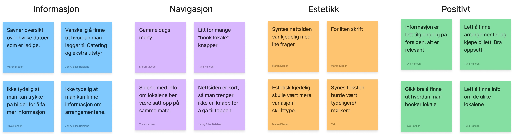
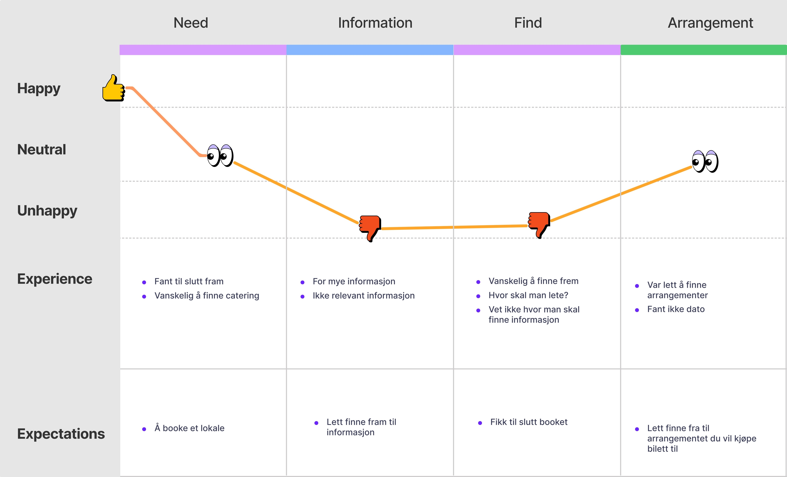
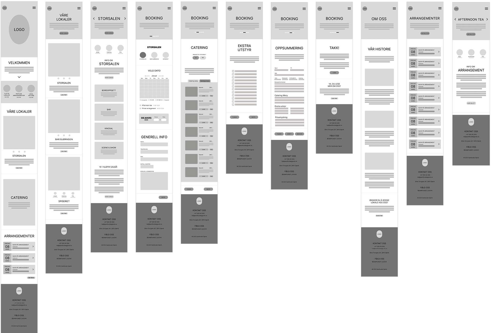
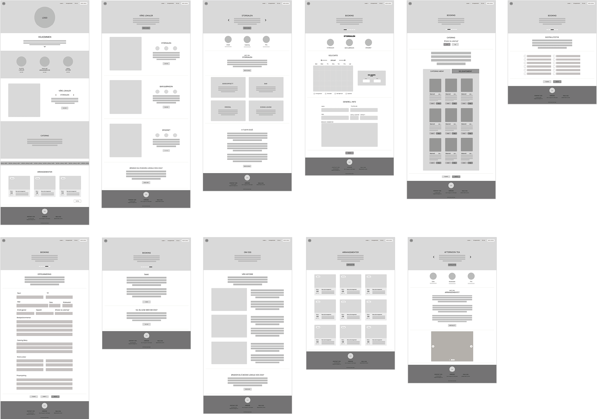
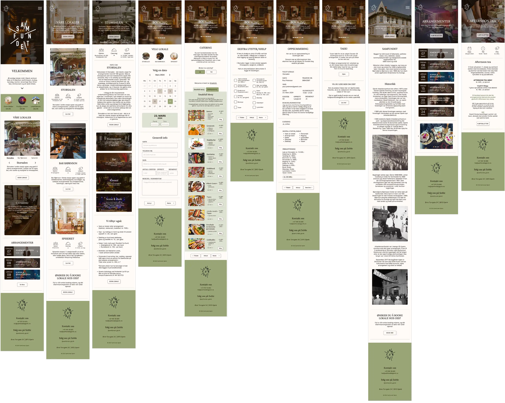
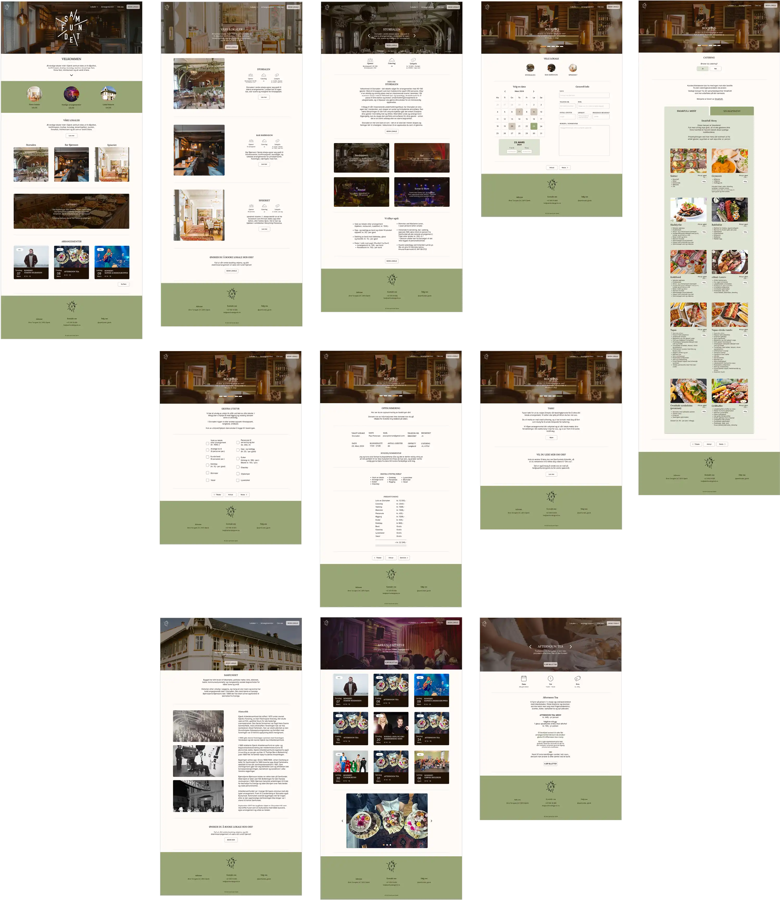

Webdesign
Samfundet Gjøvik
Skoleprosjekt
Nettsiden til Samfundet Gjøvik har et veldig stort forbedringspotensiale, både når det kommer til universell utforming og det visuelle uttrykket til siden. Oppgaven vår ble derfor å utforme en ny nettside med bedre navigasjon og mer fokus på brukervennlighet.
I dette prosjektet har vi fokusert mye på retningslinjene for tilgjengelighet på nettsider (WCAG), og har kommet fram til en løsning som tar hensyn til brukeren og gjør det enkelt å finne fram på nettsiden. Løsningen vår består av et grønt fargepalett med bra kontraster som matcher fargene man finner i lokalene til Samfundet Gjøvik, og et oppsett som gjør nettsiden mer oversiktlig.
Dette prosjektet ble løst gruppevis, og jeg jobbet sammen med Jenny E. Beisland, Maren Diesen og Tiril S. Hansen
Verktøy: Figma & Figjam
Innsiktsarbeid
Innsiktsarbeidet til dette prosjektet var omfattende og bestod av å analysere den originale nettsiden, utføre brukertesting, og lage «affinity diagram» og «user journey map»
Analyse av nåværende nettside
Den nåværende nettsiden bruker mye pastellfarger som blant annet kan påvirke lesligheten noen steder pga dårlig fargekontrast. I tillegg er navigasjonssystemet dårlig fordi det blant annet er vanskelig å finne mer informasjon om hvert arrangement, og catering menyen er gjemt under «bespisning» som kan være forvirrende når man ikke vet hva dette betyr.
Brukertesting
Etter å ha analysert nettsiden på egenhånd, valgte vi å utføre brukertesting med personer fra ulike aldersgrupper. Dette gjorde vi ved å be personene om å utføre ulike oppgaver, mens vi observerte hvordan de løste dem. Ut ifra dette fant vi ut hvilke problemer og utfordringer nettsiden har, som vi skulle jobbe med å løse. Deretter samlet vi hovedfunnene fra brukertestingen i et «affinity diagram», for å få en bedre oversikt over hva vi måtte tenke på når vi skulle designe løsningen vår.
 User journey map
Vi lagde også et «user journey map» for å vise hva brukeren syntes fungerte og ikke med nettsiden.
Personas
Til slutt brukte vi all dataen vi hadde samlet til å utvikle 2 personas med hvert sitt scenario, som vi brukte som utgangspunkt når vi skulle løse hovedproblemene på nettsiden.
Designprosess
Etter all brukertestingen, startet vi på selve designprosessen. Denne gikk hovedsaklig ut på skissing, idémyldring og prototyping.
Skisser
Vi startet med å skisse opp noen idéer til hvordan nettsiden vår kan se ut, og diskuterte hva slags oppsett som fungerte og ikke.


Enkel lo-fi mobil
Deretter gikk vi over til å utvikle en digital lo-fi versjon av nettsiden. Vi startet med mobilversjonen, og var bare innom én annet idé før vi kom fram til resultatet som vises her.
Enkel lo-fi desktop
Vi brukte oppsettet fra mobilversjonen til å sette opp en lo-fi versjon for desktop også. Det ble et par små endringer for å få ting til å fungere på en større skjerm, men alt fungerer på så og si samme måte.
Detaljer lo-fi mobil
Når vi hadde blitt enige om hvordan layoutet skulle se ut, gikk vi videre til mer detaljer lo-fi prototyping. Her begynte vi å implementere farger, bilder og effekter til løsningen vår. Vi endte opp med et design med varme, myke fargetoner og avrundede kanter som gjør at nettsiden representerer den samme varme følelsen som man får av å være på Samfundet Gjøvik.
Detaljert lo-fi desktop
Både desktopversjonen og mobilversjonen har de samme fargene og bildene, så prosessen med å implementere dette på desktopversjonen gikk relativt raskt så fort mobilversjonen var ferdig.
